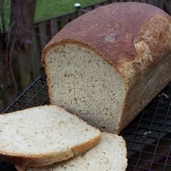

Herb bread

A delicious bread machine recipe, this bread is especially good with chicken stew.
Ingredients
- 1/4 cup warm water (110 degrees F/45 degrees C)
- 2 tablespoons margarine
- ¾ cup milk
- 1 egg
- 1 teaspoon dried parsley
- 1 1/2 teaspoons salt
- ½ teaspoon ground nutmeg
- 1 teaspoon rubbed sage
- 2 teaspoons celery seed
- 3 cups bread flour
- 2 tablespoons white sugar
- 1 teaspoon active dry yeast
Steps
- Place ingredients into the pan of the bread machine in the order suggested by the manufacturer. Select Start.